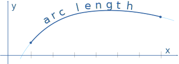
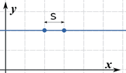
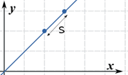
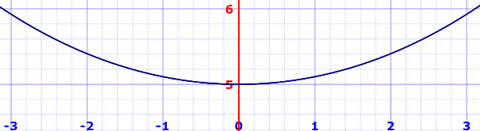

Arc Length
Using Calculus to find the length of a curve.
(Please read about Derivatives and Integrals first)
Imagine we want to find the length of a curve between two points. And the curve is smooth (the derivative is continuous).

First we break the curve into small lengths and use the Distance Between 2 Points formula on each length to come up with an approximate answer:

The distance from x0 to x1 is:
S1 = √ (x1 − x0)2 + (y1 − y0)2
And let's use Δ (delta) to mean the difference between values, so it becomes:
S1 = √ (Δx1)2 + (Δy1)2
Now we just need lots more:
S2 = √(Δx2)2 + (Δy2)2
S3 = √(Δx3)2 + (Δy3)2
...
...
Sn = √(Δxn)2 + (Δyn)2
We can write all those many lines in just one line using a Sum:
But we are still doomed to a large number of calculations!
Maybe we can make a big spreadsheet, or write a program to do the calculations ... but lets try something else.
We have a cunning plan:
- have all the Δxi be the same so we can extract them from inside the square root
- and then turn the sum into an integral.
Let's go:
First, divide and multiply Δyi by Δxi:
Now factor out (Δxi)2:
Take (Δxi)2 out of the square root:
Now, as n approaches infinity (as we head towards an infinite number of slices, and each slice gets smaller) we get:
We now have an integral and we write dx to mean the Δx slices are approaching zero in width (likewise for dy):
And dy/dx is the derivative of the function f(x), which can also be written f’(x):
The Arc Length Formula
And now suddenly we are in a much better place, we don't need to add up lots of slices, we can calculate an exact answer (if we can solve the differential and integral).
Note: the integral also works with respect to y, useful if we happen to know x=g(y):
So our steps are:
- Find the derivative of f’(x)
- Solve the integral of √1 + (f’(x))2 dx
Some simple examples to begin with:

Example: Find the length of f(x) = 2 between x=2 and x=3
f(x) is just a horizontal line, so its derivative is f’(x) = 0
Start with:
Put in f’(x) = 0:
Simplify:
Calculate the Integral:
So the arc length between 2 and 3 is 1. Well of course it is, but it's nice that we came up with the right answer!
Interesting point: the "(1 + ...)" part of the Arc Length Formula guarantees we get at least the distance between x values, such as this case where f’(x) is zero.

Example: Find the length of f(x) = x between x=2 and x=3
The derivative f’(x) = 1
Start with:
Put in f’(x) = 1:
Simplify:
Calculate the Integral:
And the diagonal across a unit square really is the square root of 2, right?
OK, now for the harder stuff. A real world example.
Example: Metal posts have been installed 6m apart across a gorge.
Find the length for the hanging bridge that follows the curve:
f(x) = 5 cosh(x/5)
Here is the actual curve:

Let us solve the general case first!
A hanging cable forms a curve called a catenary:
f(x) = a cosh(x/a)
Larger values of a have less sag in the middle
And "cosh" is the hyperbolic cosine function.
The derivative is f’(x) = sinh(x/a)
The curve is symmetrical, so it is easier to work on just half of the catenary, from the center to an end at "b":
Start with:
Put in f’(x) = sinh(x/a):
Use the identity 1 + sinh2(x/a) = cosh2(x/a):
Simplify:
Calculate the Integral:
S = a sinh(b/a)
Now, remembering the symmetry, let's go from −b to +b:
S = 2a sinh(b/a)
In our specific case a=5 and the 6m span goes from −3 to +3
S = 2×5 sinh(3/5)
= 6.367 m (to nearest mm)
This is important to know! If we build it exactly 6m in length there is no way we could pull it hard enough for it to meet the posts. But at 6.367m it will work nicely.

Example: Find the length of y = x(3/2) from x = 0 to x = 4.
The derivative is y’ = (3/2)x(1/2)
Start with:
Put in (3/2)x(1/2):
Simplify:
We can use integration by substitution:
- u = 1 + (9/4)x
- du = (9/4)dx
- (4/9)du = dx
- Bounds: u(0)=1 and u(4)=10
And we get:
Integrate:
S = (8/27) u(3/2) from 1 to 10
Calculate:
S = (8/27) (10(3/2) − 1(3/2)) = 9.073...
Conclusion
The Arc Length Formula for a function f(x) is:
Steps:
- Take derivative of f(x)
- Write Arc Length Formula
- Simplify and solve integral